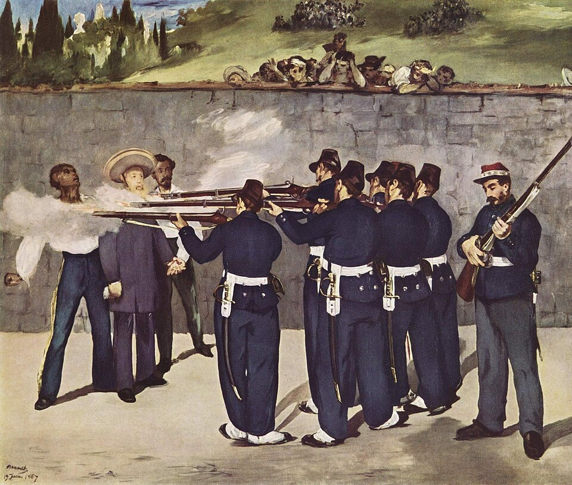

Maximiliano muere fusilado en el Cerro de las Campanas junto a Miramón y Mejía
El consejo de guerra cumplió su sentencia esta mañana en Querétaro, pese a los indultos pedidos por media Europa. Juárez fue inflexible: la ley es la ley. La república queda restaurada.

Poco después de las siete de la mañana, en el Cerro de las Campanas, una descarga acabó con el imperio. Fernando Maximiliano de Habsburgo fue fusilado hoy junto a los generales Miguel Miramón y Tomás Mejía, en cumplimiento de la sentencia del consejo de guerra que los juzgó conforme a la ley de veinticinco de enero de 1862. El archiduque, sereno, cedió a Miramón el lugar de honor al centro, dijo en español que moría por la independencia y la libertad de México y deseó que su sangre fuera la última derramada por esta tierra. Minutos después, tres cuerpos yacían al pie del cerro.
Termina así, a los treinta y cuatro años, la vida del príncipe que vino del castillo de Miramar a reinar sobre un trono prestado. Hermano del emperador de Austria, aceptó en 1864 la corona que le ofreció una diputación de notables mexicanos, persuadido de que el país entero lo llamaba. Con la emperatriz Carlota entró en México entre arcos y tedeums. Tres años después, abandonado por Napoleón III, que retiró sus ejércitos, quiso sostenerse con los generales conservadores, se encerró en Querétaro, resistió setenta y un días de sitio y cayó prisionero en mayo, por traición según unos, por fortuna de guerra según otros.
El presidente Juárez resistió todas las presiones. Pidieron gracia soberanos de Europa, Garibaldi, Víctor Hugo; lloró en San Luis la princesa de Salm-Salm, y el gobierno respondió que la ley es la ley, y que México no puede castigar en el soldado raso lo que perdonaría en el archiduque. La ley de enero de 1862 castiga con la muerte a quienes atenten contra la independencia de la nación, y el consejo de guerra reunido en el teatro de Querétaro la aplicó. Cinco años de intervención, decenas de miles de muertos y dos gobiernos paralelos pesaron más que todos los telegramas de las cortes.
Los testigos refieren que Maximiliano subió al cerro con paso firme, vestido de negro, y abrazó a sus compañeros de infortunio. Cuentan que repartió monedas de oro entre los soldados del pelotón, rogándoles que apuntaran al pecho y respetaran su rostro, para que su madre pudiera reconocerlo. Se dice que alabó la hermosura de la mañana antes de morir. Miramón, el general que fue dos veces presidente, escuchó impasible; Mejía, el soldado fiel de la Sierra Gorda, murió como vivió, sin una queja. Las campanas de Querétaro doblaron después, y muchos vecinos, sin distinción de partido, se descubrieron al paso de los féretros.
Este diario no festeja la muerte de nadie, y menos la de un hombre que la afrontó con dignidad. Pero deja constancia de la lección, porque es de las que fundan: los tronos no se importan, las coronas no cruzan el mar en cajas de Europa. Un príncipe acaso bien intencionado vino a reinar sobre un pueblo que no lo llamó, sostenido por bayonetas extranjeras; las bayonetas se fueron y el pueblo quedó. La república, pobre y en carreta, venció al imperio de los palacios. Quede dicho con la sobriedad del caso: México no será de nadie más que de los mexicanos.